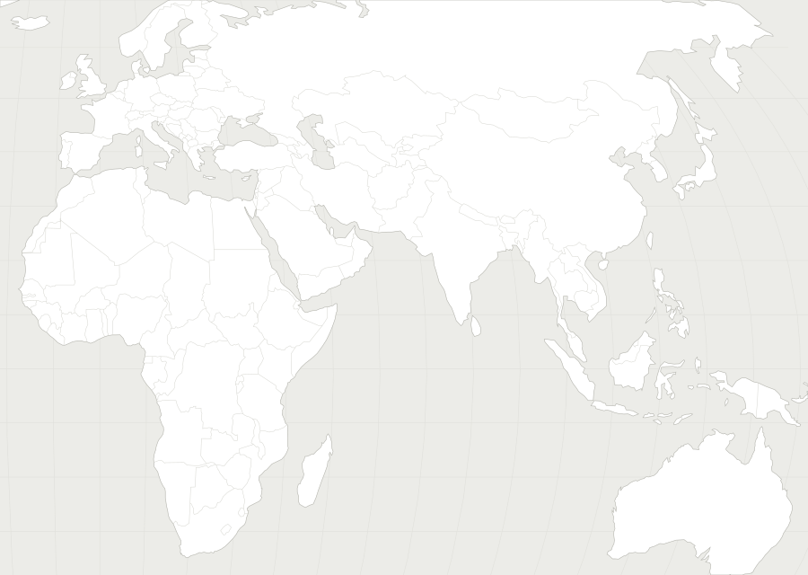

11月5日防务要闻地图

01 · 乌克兰（示意） · 俄乌 / 欧洲俄一夜310架无人机袭乌，多州限电核电站降出力Interfax-Ukraine；ISW · 三档读全文 →
02 · 扎波罗热（示意） · 俄乌 / 欧洲科米舒瓦哈人道援助点遇难升至至少40人ISW；The Independent · 三档读全文 →
05 · 台湾周边（示意） · 印太 / 台海台防部：共机21架次19架逾中线；另报联合战备警巡台湾国防部 Taiwan MND；台湾国防部新闻稿；中央社 CNA · 一档读全文 →
06 · 韩国（示意） · 印太 / 台海朝鲜自宣德向东海发射多枚导弹，据信不足300公里Yonhap；ISW / TheStudyofWar · 一档读全文 →
07 · 巴基斯坦（示意） · 印太 / 台海巴基斯坦完成国产Fa’az空空导弹首次飞行试验The War Zone · 一档读全文 →
08 · 伊朗（示意） · 中东 / 导弹 / 核美军两飞行员非敌对死亡；UKMTO本期无新警告Defense News；Defense News；UKMTO recent incidents · 一档读全文 →
10 · 法国（示意） · 太空 / 产业法国与Naval Group签约大型远洋无人潜航器，2028海试Defense News · 一档读全文 →
11 · 法国（示意） · 太空 / 产业MBDA称Stratus RS射程远远超过飞鱼，待DGA合同Defense News · 一档读全文 →
12 · 挪威（示意） · 太空 / 产业EDGE在阿联酋下水安哥拉第二艘护卫舰；欧洲无人艇展会动态Naval News；Naval News；Defense News · 一档读全文 →
未定位： · ·
一档三档